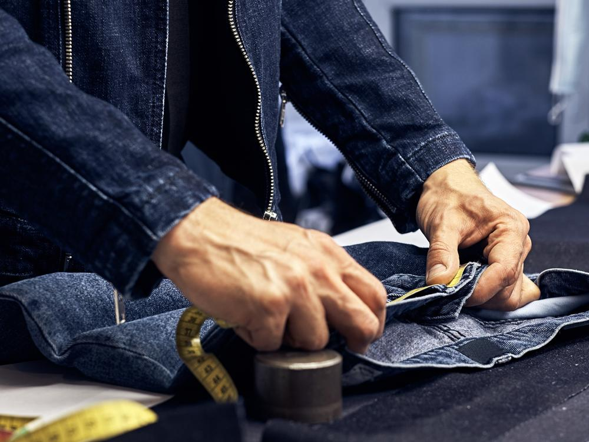
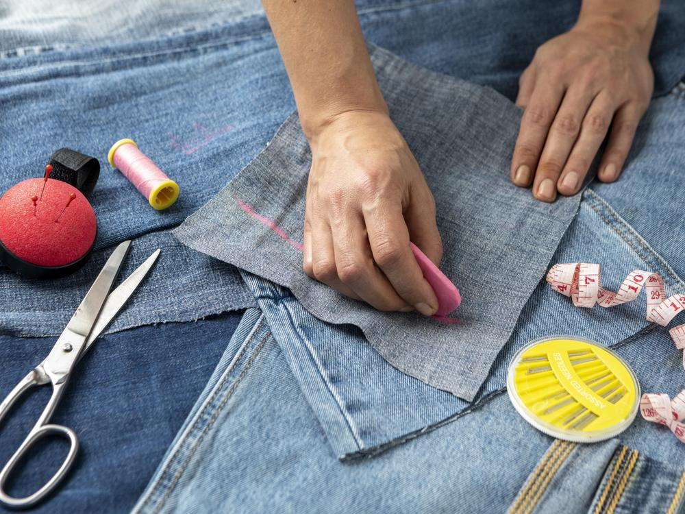
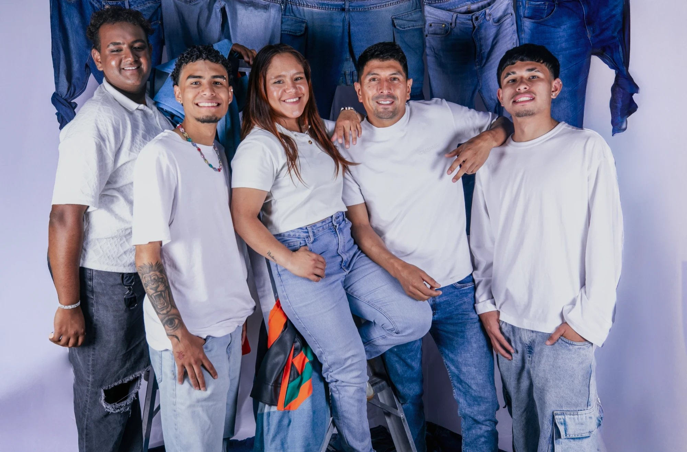

01 Resistencia
Una tela hecha para durar
El denim es una de las telas más resistentes que existen: después de años de uso sigue siendo lo bastante fuerte para convertirse en algo nuevo, sin perder calidad.
Up Style es un proyecto de moda circular hecho en la Sabana Norte de Cundinamarca, como respuesta al problema de los residuos textiles en Bogotá.
01 · La problemática
Del mundo a Colombia, y de Colombia a nuestra propia Sabana Norte: así se ve el problema de los residuos textiles.
Por eso existe Up Style: para que una parte de ese denim tenga una segunda oportunidad en la Sabana Norte, en lugar de terminar en un relleno sanitario.
Objetivo de Desarrollo Sostenible 12
Up Style aporta a la meta 12.5 de la ONU: reducir considerablemente la generación de desechos mediante la prevención, la reducción, el reciclaje y la reutilización de aquí a 2030.
02 · El proceso
Así transformamos una prenda de denim en desuso, y esto es lo que investigamos sobre por qué el denim es la tela ideal para reutilizar.
Recibimos prendas de denim en desuso donadas por estudiantes, docentes y la comunidad cercana al proyecto, y nos apoyamos en puntos como los de Renovamoda en Chía.
Revisamos cada prenda: color, grosor, estado de la tela y piezas aprovechables (bolsillos, costuras, botones).
Definimos qué producto tiene más sentido para cada prenda, según su tamaño y las piezas disponibles.
Cortamos y confeccionamos el nuevo producto, reutilizando también hilos, botones y remaches originales cuando es posible.
El producto terminado se documenta, se fotografía y se comparte en el catálogo y en redes sociales.


¿Por qué el denim?
Investigamos qué hace del jean la tela ideal para un proyecto de reutilización textil.
El denim es una de las telas más resistentes que existen: después de años de uso sigue siendo lo bastante fuerte para convertirse en algo nuevo, sin perder calidad.
El jean es una de las prendas más comunes en el armario promedio, lo que también significa que es una de las que más termina descartada, y con más potencial de reutilización.
Producir un solo jean puede gastar más de 7.500 litros de agua. Reutilizar uno existente evita ese gasto desde el primer corte.
03 · Merch
Productos oficiales de Up Style, cada uno con nuestro logo. Toca un producto para ver sus detalles.
05 · Equipo
Las 5 personas detrás de Up Style. Toca una foto para conocer a cada integrante y sus redes.

06 · Participa
Los dos formularios abren un correo ya escrito hacia Up Style. Solo tienes que enviarlo.
¿Tienes una duda sobre el proyecto, el proceso o cómo donar? Pregúntanos.
Cuéntanos cuántas prendas tienes y te contactamos para coordinar la entrega.